PENTAX K-3 Mark III와 PENTAX Q7의 카메라 색감(Custom Image)을 Lightroom용 프로파일로 만드는 프로그램입니다. 이 설명서는 프로그램 안에 들어 있어 인터넷이나 웹 브라우저 없이 볼 수 있습니다. 언제든 F1을 누르면 열립니다.
|
차례 1. 한눈에 보기 · 2. 설치와 실행 · 3. 화면 구성 · 4. 기본 사용 순서 · 5. 프로파일 조정 · 6. 내보내기와 레시피 7. 다른 카메라의 색감 · 8. Lightroom에 프로파일 추가하기 · 9. 메뉴와 단축키 · 10. 명령줄 11. 펌웨어에서 색을 복원한 방법 · 12. 한계 · 13. 문제 해결 · 14. 출처와 라이선스 |
카메라가 JPEG을 만들 때 쓰는 색 표와 계산식은 펌웨어 안에 들어 있습니다. 이 프로그램은 그 값을 미리 꺼내 담아 두었고, 같은 계산을 해서 Lightroom이 읽는 DCP 프로파일로 옮깁니다. 그 프로파일을 Lightroom에서 고르면 RAW가 카메라 JPEG과 같은 색감으로 현상됩니다.
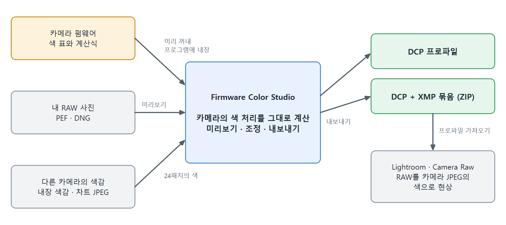
할 수 있는 일은 세 가지입니다.
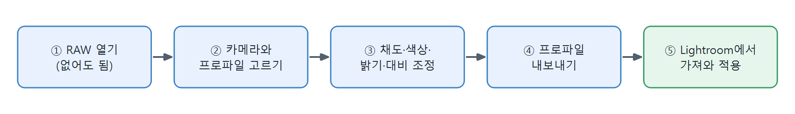
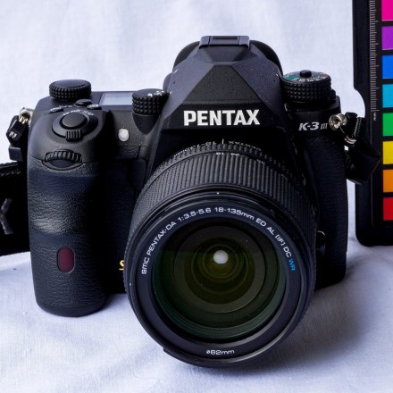 PENTAX K-3 Mark III · 펌웨어 2.20 기준 Custom Image 16종과 Gold |
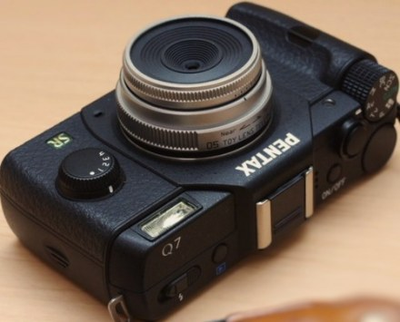 PENTAX Q7 · 펌웨어 1.01 기준 Custom Image 10종 |
지원하는 카메라와 파일
|
FirmwareColorStudio-버전-windows-x64-setup.exe를 내려받아 실행합니다. 64비트 Windows용입니다.%LOCALAPPDATA%\Programs\Firmware Color Studio이고, 시작 메뉴에 Firmware Color Studio가 생깁니다. 바탕 화면 바로 가기는 설치 중에 선택할 수 있습니다.
설치 파일에는 코드 서명이 없어 Windows가 "PC 보호" 경고를 보일 수 있습니다. 추가 정보 → 실행을 누르면 설치가 진행됩니다.
내려받은 파일이 올바른지는 같은 배포 페이지의 SHA256SUMS.txt로 확인할 수 있습니다.
|
제거는 Windows의 설정 → 앱 → 설치된 앱에서 Firmware Color Studio를 골라 합니다. 프로그램이 기억하는 것은 화면 언어와 마지막으로 고른 카메라뿐입니다.
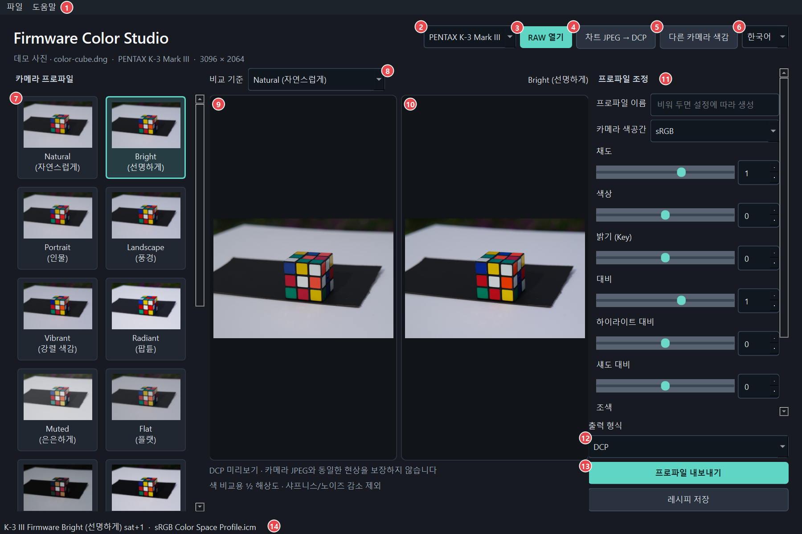
| 번호 | 이름 | 하는 일 |
|---|---|---|
| ① | 메뉴 | 파일에 모든 작업이, 도움말에 이 설명서(F1)와 상세 정보가 있습니다. → 9. 메뉴와 단축키 |
| ② | 카메라 | 프로파일을 만들 카메라입니다. PENTAX K-3 Mark III와 PENTAX Q7 가운데 고릅니다. RAW를 열면 그 RAW를 찍은 카메라로 바뀝니다. |
| ③ | RAW 열기 | 미리보기에 쓸 PEF·DNG를 엽니다. 파일을 창에 끌어 놓아도 됩니다. |
| ④ | 차트 JPEG → DCP | 다른 카메라로 찍은 ColorChecker 차트 JPEG에서 색감을 추정합니다. → 7.2 |
| ⑤ | 다른 카메라 색감 | 프로그램에 든 여섯 카메라의 색감으로 프로파일을 만듭니다. → 7.1 |
| ⑥ | 언어 | 화면 언어(한국어 / English)입니다. 이 설명서는 한국어로만 제공합니다. |
| ⑦ | 카메라 프로파일 | 선택한 카메라의 Custom Image 목록입니다. 작은 그림은 열려 있는 RAW에 각 프로파일을 출고값으로 적용한 모습입니다. 누르면 그 프로파일이 선택됩니다. |
| ⑧ | 비교 기준 | 왼쪽 미리보기에 쓸 프로파일입니다. 현재 프로파일과 견줄 대상을 고릅니다. |
| ⑨ | 왼쪽 미리보기 | 비교 기준 프로파일을 출고값으로 적용한 사진입니다. |
| ⑩ | 오른쪽 미리보기 | 지금 선택하고 조정한 프로파일을 적용한 사진입니다. 내보내면 이 색감이 프로파일에 담깁니다. 위쪽에 프로파일 이름이 표시됩니다. |
| ⑪ | 프로파일 조정 | 이름, 카메라 색공간, 채도·색상·밝기·대비, 조색을 정합니다. → 5. 프로파일 조정 |
| ⑫ | 출력 형식 | DCP 또는 DCP + XMP (ZIP)입니다. → 6. 내보내기와 레시피 |
| ⑬ | 프로파일 내보내기 레시피 저장 | 프로파일 파일을 저장합니다. 레시피는 지금 설정을 나중에 다시 열 수 있게 저장한 파일입니다. |
| ⑭ | 상태 표시줄 | 내보낼 프로파일의 이름과 미리보기에 적용한 모니터 색 프로파일을 보여 줍니다. 저장이 끝나면 저장한 경로가 나옵니다. |
제목 아래 줄에는 열려 있는 파일 이름, 카메라 기종, 미리보기 크기가 나옵니다. 미리보기 아래의 회색 글은 미리보기의 성격을 알리는 안내이고, 노란 글은 그 RAW나 설정에 관한 주의입니다.
프로파일 이름은 영문과 카메라 한글 메뉴 표기를 함께 씁니다. 아래 사진은 같은 RAW에 몇 가지 프로파일을 출고값으로 적용한 것입니다.
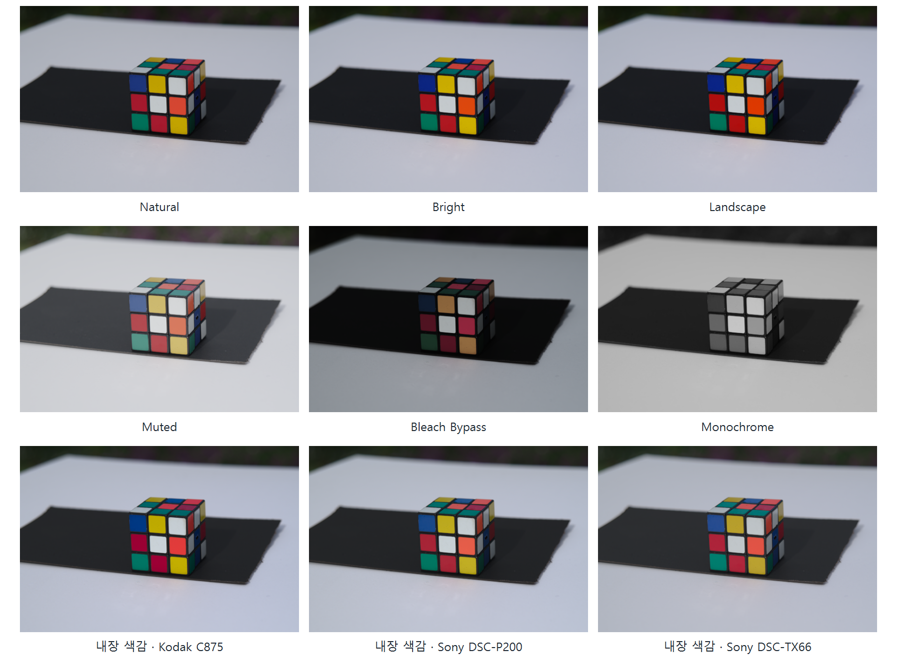
| 카메라 | 프로파일 |
|---|---|
| K-3 Mark III | Natural (자연스럽게), Bright (선명하게), Portrait (인물), Landscape (풍경), Vibrant (강렬 색감), Radiant (팝튠), Muted (은은하게), Flat (플랫), Bleach Bypass (블리치 바이패스), Reversal Film (리버설 필름), Monochrome (모노톤), SATOBI (사토비), HARUBENI (하루베니), KATEN (카텐), KYUSHU (큐슈), FUYUNO (후유노), Gold (골드) |
| Q7 | Natural, Bright, Portrait, Landscape, Vibrant, Radiant, Muted, Bleach Bypass, Reversal Film, Monochrome |
오른쪽 패널에서 값을 바꾸면 오른쪽 미리보기가 따라 바뀝니다. 자세한 내용은 5. 프로파일 조정에 있습니다. 카메라에서 쓰던 설정을 그대로 옮기려면, 그 설정으로 찍은 RAW를 열고 촬영 설정 가져오기를 누르면 됩니다.
⑬ 프로파일 내보내기(Ctrl+E)로 파일을 저장한 뒤, 8. Lightroom에 프로파일 추가하기를 따라 가져옵니다.
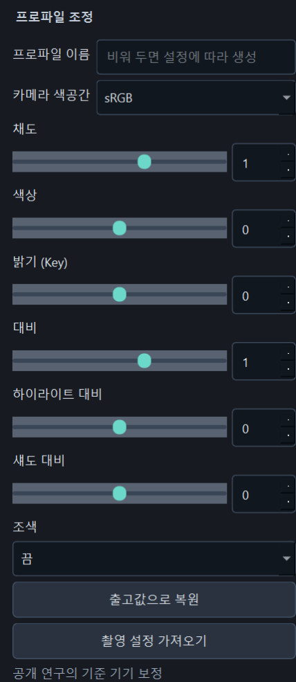 |
|
모든 슬라이더는 카메라 메뉴와 같은 −4에서 +4까지의 정수입니다. 슬라이더를 끌거나 오른쪽 칸에 숫자를 넣습니다. 회색으로 잠긴 항목은 카메라가 그 모드에서 조절을 제공하지 않는 것입니다.
| 모드 | 조절할 수 있는 것 |
|---|---|
| 대부분의 모드 | 채도, 색상, 밝기, 대비 (K-3 Mark III는 하이라이트·섀도 대비도) |
| Muted, Bleach Bypass, HARUBENI | 색상 대신 조색을 씁니다. 조색을 켜면 출력 형식이 DCP + XMP로 바뀝니다. |
| Monochrome | 밝기와 대비 계열만 조절합니다. 채도와 색상은 없습니다. |
| Reversal Film | 조절 항목이 없습니다. 카메라에서도 고정된 모드입니다. |
| Gold (K-3 Mark III) | 모든 항목을 조절하지만 항상 DCP + XMP로 내보냅니다. |
밝기와 대비 계열은 프로파일에 담기는 톤 곡선을 바꿉니다. 아래는 몇 가지 모드의 출고값 곡선입니다.
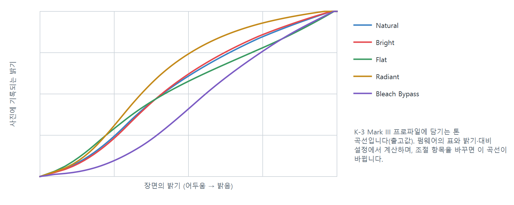
카메라가 기록한 DNG에는 그 기체에 맞춘 색 보정 행렬이 들어 있습니다. 파일 → 내 DNG 보정 행렬 가져오기에서 내 카메라로 찍은 DNG를 고르면 내보내는 프로파일에 그 행렬을 넣습니다. Lightroom이 화이트밸런스(색온도·색조)를 계산할 때 쓰는 값입니다. 선택한 카메라와 같은 기종의 DNG여야 합니다. 파일 → 공개 보정 행렬 사용을 누르면 기본값으로 돌아갑니다. 지금 어느 쪽을 쓰는지는 조정 패널 맨 아래에 표시됩니다.
| 형식 | 내용 | 언제 쓰나 |
|---|---|---|
| DCP | 파일 하나(.dcp)입니다. 센서 행렬, 톤 곡선, 색 보정표가 들어 있습니다. | 보통은 이 형식을 씁니다. |
| DCP + XMP (ZIP) | ZIP 하나에 기반 DCP, XMP 프로파일, 레시피 JSON, README가 들어 있습니다. XMP가 색을 3차원 표로 담습니다. | Gold와 조색은 DCP만으로 담을 수 없어 자동으로 이 형식이 됩니다. 다른 모드에서도 직접 고를 수 있습니다. |
레시피는 카메라, 모드, 각 조절값, 색공간, 조색, 이름, 보정 행렬을 담은 작은 JSON 파일입니다.
다른 카메라가 만든 JPEG의 색감과 명암을 추정해, 선택한 Pentax 카메라용 DCP로 만듭니다. 방법은 두 가지입니다.
차트 사진 없이 바로 쓸 수 있습니다. Kodak C875, Sony DSC-P200, Sony DSC-TX66, Sony DSC-T100, Konica Minolta DiMAGE X1, Samsung EX1의 색감이 들어 있습니다.
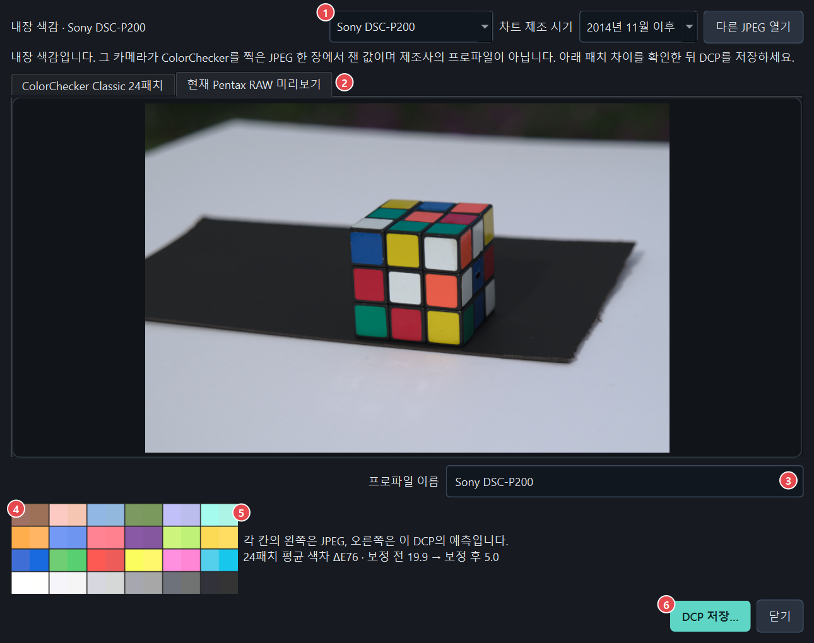
| 내장 색감은 각 카메라가 같은 ColorChecker 차트를 찍은 JPEG 한 장에서 잰 24가지 색입니다. 제조사가 만든 프로파일이 아니고, 그 카메라의 색을 추정한 것입니다. 다른 장면에서는 Lightroom에서 노출과 화이트밸런스를 따로 맞춰야 합니다. |
닮고 싶은 카메라로 ColorChecker Classic(24패치)을 찍은 JPEG 한 장이 있으면 그 카메라의 색감을 직접 추정할 수 있습니다. ColorChecker Passport는 24패치가 있는 Classic 면을 씁니다.
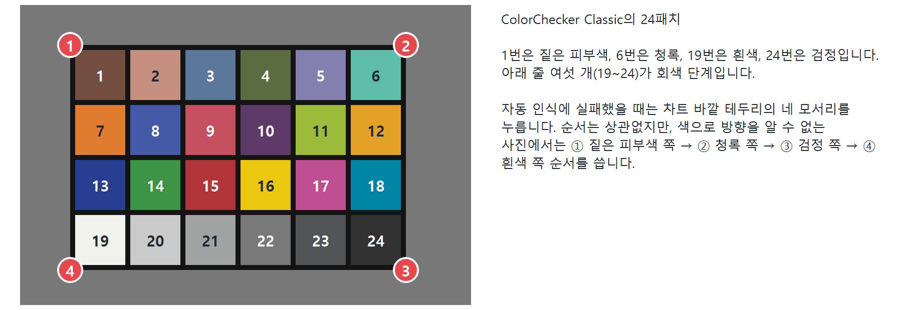
차트를 찍을 때
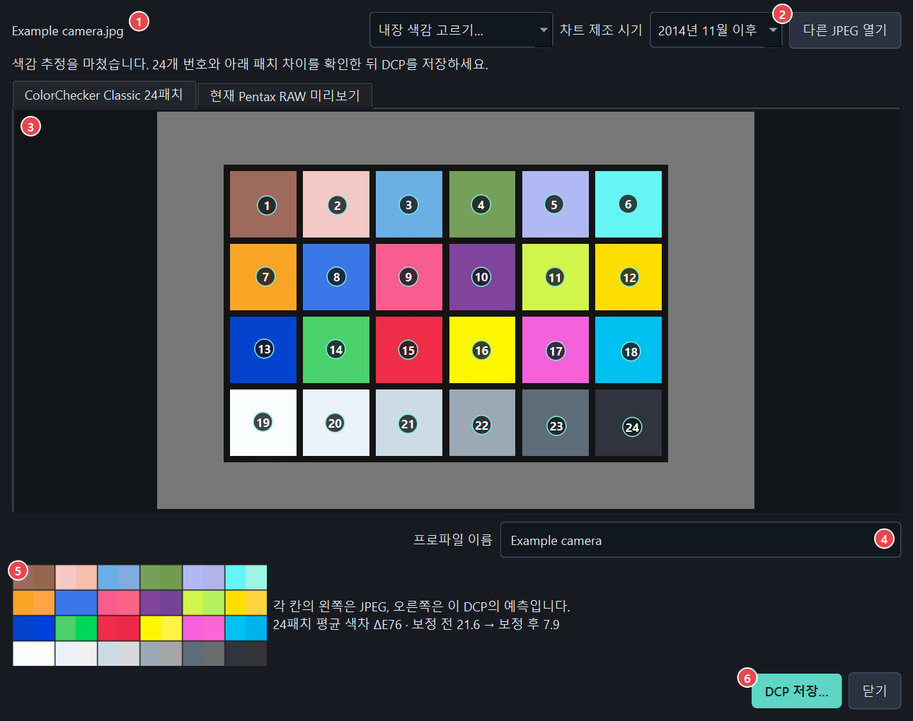
자동 인식에 실패했을 때만 네 모서리를 지정하라는 안내가 나옵니다.
내보낸 .dcp 또는 .zip을 Adobe 프로그램에 한 번 가져오면, 그 뒤로는 프로파일 목록에서 고르기만 하면 됩니다.
Lightroom Classic과 Photoshop의 Camera Raw는 프로파일 폴더를 함께 쓰므로 한쪽에서 가져오면 다른 쪽에서도 보입니다. Lightroom(클라우드 버전)에는 따로 가져옵니다.
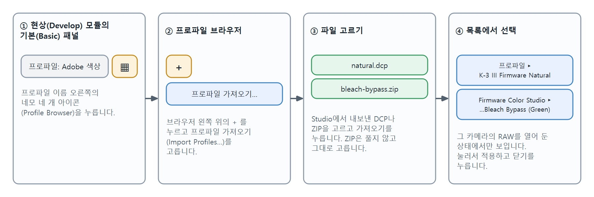
위 그림은 순서를 나타낸 개념도이며 실제 화면과 모양이 다릅니다. 메뉴 이름은 Lightroom 버전과 언어에 따라 조금 다를 수 있습니다.
.dcp 또는 .zip을 고르고 가져오기를 누릅니다. 여러 파일을 한꺼번에 고를 수 있습니다. ZIP은 압축을 풀지 않고 그대로 고릅니다.| 내보낸 형식 | 프로파일 브라우저에서 나타나는 곳 |
|---|---|
| DCP (카메라 모드, 내장 색감, 차트 색감) | 프로파일(Profiles) 묶음에 프로파일 이름으로 나타납니다. |
| DCP + XMP (ZIP) | Firmware Color Studio 묶음에 프로파일 이름으로 나타납니다. 이것을 고릅니다. 함께 설치된 기반 DCP는 직접 고르지 않습니다. |
.dcp 또는 .zip을 고르고 가져옵니다.가져오기 메뉴를 쓸 수 없을 때는 파일을 아래 폴더에 복사하고 Lightroom을 다시 실행합니다. ZIP은 먼저 압축을 풉니다.
| 파일 | Windows | macOS |
|---|---|---|
.dcp | %APPDATA%\Adobe\CameraRaw\CameraProfiles | ~/Library/Application Support/Adobe/CameraRaw/CameraProfiles |
.xmp | %APPDATA%\Adobe\CameraRaw\Settings | ~/Library/Application Support/Adobe/CameraRaw/Settings |
.json(레시피)과 README.txt는 복사하지 않아도 됩니다. 레시피는 나중에 Studio에서 다시 열 수 있으니 보관해 두면 좋습니다.| 확인할 것 | 설명 |
|---|---|
| 그 카메라의 RAW를 열었습니까? | 프로파일에는 카메라 이름(PENTAX K-3 Mark III 또는 PENTAX Q7)이 적혀 있어, 그 기종의 RAW를 고른 상태에서만 목록에 나타납니다. K-3 Mark III용 프로파일은 Q7 사진에서 보이지 않습니다. |
| JPEG이나 TIFF를 열지 않았습니까? | 카메라 프로파일은 RAW(PEF, DNG)에만 적용됩니다. |
| Lightroom을 다시 실행했습니까? | 폴더에 직접 넣었다면 다시 실행해야 읽습니다. |
| ZIP을 풀어서 일부만 넣지 않았습니까? | DCP + XMP 묶음은 DCP와 XMP가 모두 있어야 합니다. 가져오기 메뉴로 ZIP을 그대로 가져오는 것이 가장 안전합니다. |
| 어느 묶음을 보고 있습니까? | DCP는 프로파일(Profiles), DCP + XMP는 Firmware Color Studio 묶음에 있습니다. 프로파일 브라우저를 아래로 내려 확인합니다. |
| 메뉴 | 항목 | 단축키 | 하는 일 |
|---|---|---|---|
| 파일 | RAW 열기 | Ctrl+O | 미리보기에 쓸 PEF·DNG를 엽니다. |
| 레시피 열기 | Ctrl+Shift+O | 저장해 둔 설정(JSON)을 불러옵니다. | |
| 차트 JPEG → DCP | 차트 JPEG에서 색감을 추정합니다. | ||
| 다른 카메라 색감 | 내장 색감으로 프로파일을 만듭니다. | ||
| 레시피 저장 | Ctrl+S | 지금 설정을 JSON으로 저장합니다. | |
| 프로파일 내보내기 | Ctrl+E | DCP 또는 DCP + XMP 묶음을 저장합니다. | |
| 내 DNG 보정 행렬 가져오기 | 내 카메라 DNG의 색 보정 행렬을 프로파일에 씁니다. | ||
| 공개 보정 행렬 사용 | 기본 보정 행렬로 돌아갑니다. | ||
| 도움말 | 사용 설명서 | F1 | 이 설명서를 엽니다. |
| 상세 정보 | 프로그램 버전, 카메라와 펌웨어 버전을 보여 줍니다. Show Details…(자세히 보기)를 누르면 지금의 레시피, 프로파일, RAW 정보가 나옵니다. 문제를 알릴 때 이 내용을 함께 보내면 도움이 됩니다. |
설명서 창 위쪽의 뒤로는 이전에 보던 위치로, 처음으로는 차례로 돌아갑니다. 웹 브라우저로 열기는 같은 문서를 브라우저에서 엽니다. 인쇄할 때 편리합니다.
소스에서 설치한 경우(pip install) fcs 명령으로 같은 일을 창 없이 할 수 있습니다. 여러 프로파일을 한꺼번에 만들 때 씁니다. 출력 파일은 기존 파일을 덮어쓰지 않습니다.
| 명령 | 하는 일 |
|---|---|
fcs recipe recipe.json --camera pentax-q7 --mode bright | 출고값 레시피를 씁니다. 이 파일을 고쳐 내보냅니다. |
fcs export recipe.json output.dcp | 레시피를 DCP로 내보냅니다. |
fcs export recipe.json output.zip --enhanced | DCP + XMP 묶음으로 내보냅니다. |
fcs preview input.DNG output.png --mode natural | RAW에 프로파일을 적용한 그림을 저장합니다. |
fcs look listfcs look "Sony DSC-P200" P200.dcp --camera pentax-q7 | 내장 색감의 이름을 보고, 그 색감을 DCP로 저장합니다. |
fcs chart-fit chart.jpg output.dcp --edition pre2014 | 차트 JPEG에서 DCP를 만듭니다. |
fcs verify --report result.json | 프로그램에 든 색 데이터가 원본과 같은지 검사합니다. |
--camera는 pentax-k3iii(기본) 또는 pentax-q7입니다.
카메라 프로파일은 사진을 보고 비슷하게 맞춘 것이 아니라, 카메라 펌웨어가 실제로 쓰는 표와 계산식에서 나온 것입니다. 과정을 간단히 적습니다.
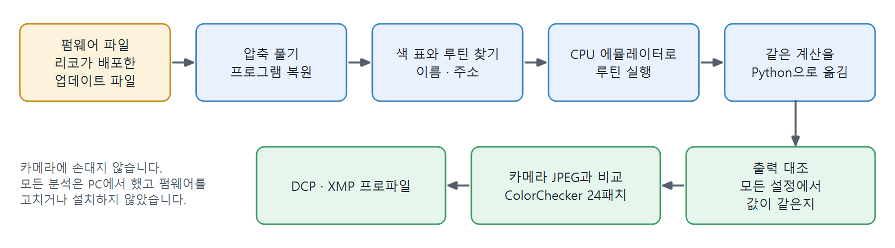
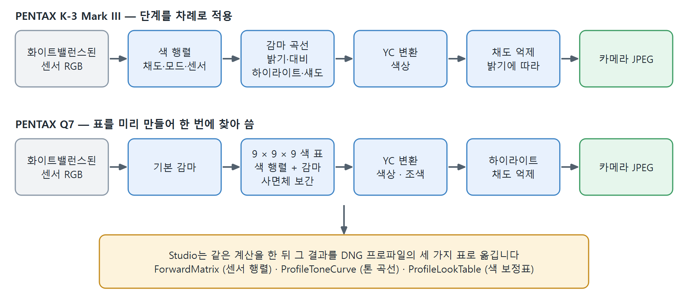
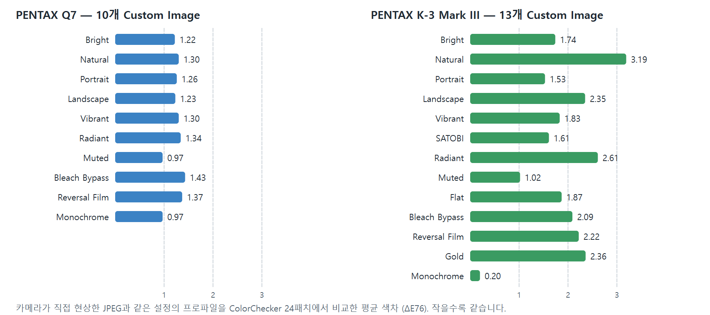
색차 ΔE76은 1 안팎이면 나란히 놓아야 겨우 구별되는 정도이고, 2~3이면 주의 깊게 보면 보이는 정도입니다. Q7은 0.97~1.43, K-3 Mark III는 0.20~3.19입니다. K-3 Mark III는 밝고 진한 노랑·주황에서 카메라가 조금 더 진하고 어둡게 나오는 차이가 남아 있습니다. 한 장면, ISO 100에서 잰 값입니다.
분석 기록: github.com/yunhyok/pentax-k3iii-firmware-analysis · github.com/yunhyok/pentax-q7-firmware-analysis
| 증상 | 해결 |
|---|---|
| RAW를 열면 "처리할 수 없습니다" 창이 뜹니다. | 지원하는 파일인지 확인합니다(1. 한눈에 보기). Pixel Shift, HDR, 다른 프로그램이 변환한 DNG는 열 수 없습니다. 프로파일은 RAW 없이도 내보낼 수 있습니다. |
| 출력 형식에서 DCP를 고를 수 없습니다. | Gold 모드이거나 조색이 켜져 있습니다. 이 둘은 DCP + XMP로만 담을 수 있습니다. 조색을 끔으로 두면 DCP를 고를 수 있습니다. |
| 일부 슬라이더가 회색입니다. | 카메라가 그 모드에서 제공하지 않는 항목입니다(5. 프로파일 조정). |
| 촬영 설정 가져오기가 눌리지 않습니다. | RAW에 Custom Image 설정이 기록돼 있지 않거나 데모 사진입니다. 내 카메라로 찍은 RAW를 엽니다. |
| "조색 끔"이라는 노란 글이 보입니다. | Bleach Bypass나 HARUBENI를 조색 없이 내보낸다는 알림입니다. 그대로 내보내도 됩니다. 카메라에서 조색을 켜고 쓴다면 같은 색을 고릅니다. |
| 차트를 자동으로 찾지 못합니다. | 바깥 테두리 네 모서리를 직접 누릅니다(7.2). 차트가 너무 작거나 기울었거나 일부가 가려진 사진에서 일어납니다. |
| Lightroom에서 프로파일이 보이지 않습니다. | 8.6 프로파일이 목록에 보이지 않을 때를 확인합니다. 가장 흔한 원인은 다른 기종의 사진을 고른 것입니다. |
| Lightroom에서 색이 이상합니다 (DCP + XMP). | Firmware Color Studio 묶음의 프로파일을 골랐는지 확인합니다. 기반 DCP만 적용하면 색이 맞지 않습니다. |
| 미리보기 색이 Lightroom과 조금 다릅니다. | 미리보기는 색 비교용 근사입니다. Lightroom의 화이트밸런스가 촬영 시 설정인지, 다른 슬라이더가 0인지 확인합니다. |
| 파일을 저장할 수 없습니다. | 열어 둔 RAW나 JPEG과 같은 이름으로는 저장하지 않습니다. 다른 이름이나 폴더를 고릅니다. |
THIRD_PARTY_NOTICES.md에 있습니다.맨 위로 · 문의와 오류 신고: github.com/yunhyok/firmware-color-studio